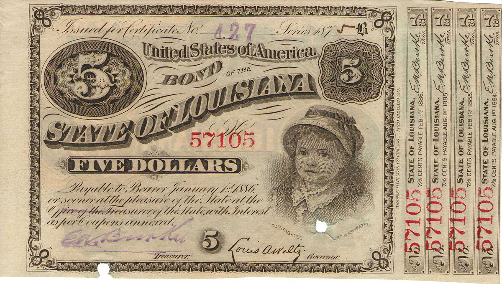
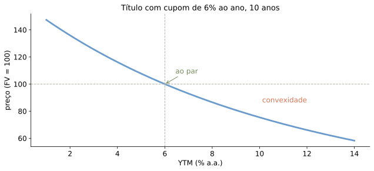
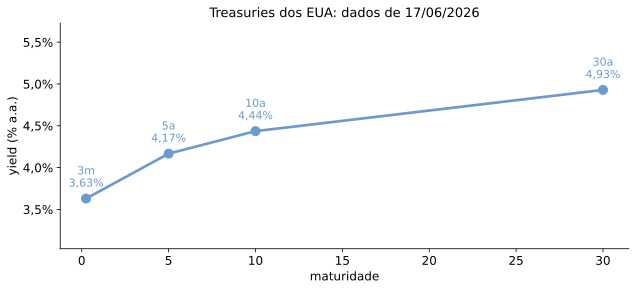
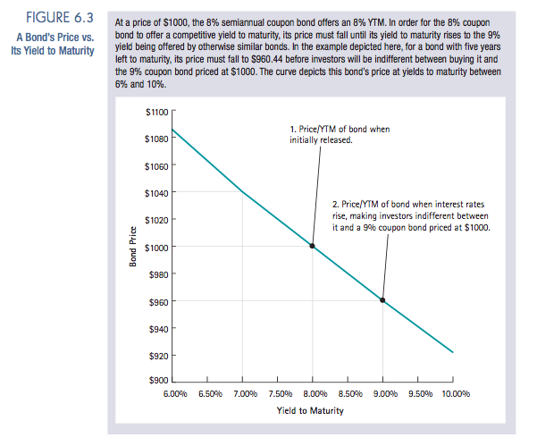
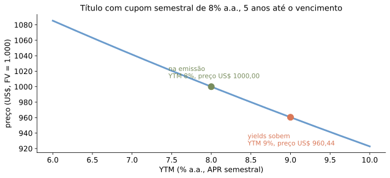
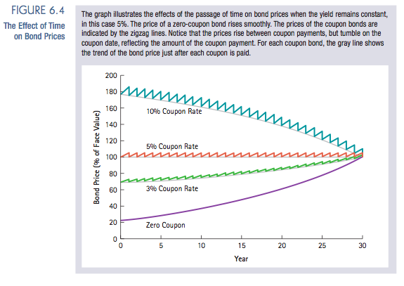
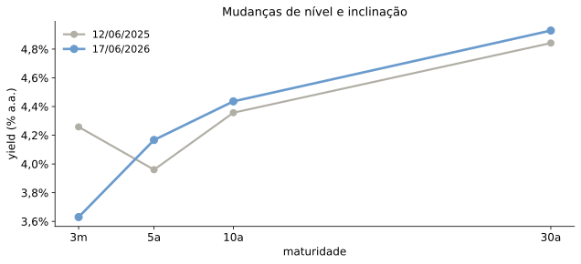
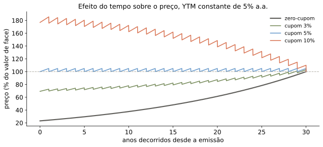
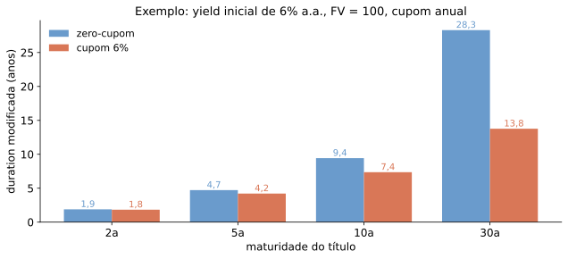

| métrica | valor |
|---|---|
| YTM de 10 anos em 17/06/2026 | 4,44% |
| Preço do título | 96,51 |
| Duration modificada | 8,12 anos |
| Efeito aproximado de +1 p.p. no yield | -8,1% |
Um título é um pacote de fluxos de caixa.
\[P = \sum_{t=1}^{T} \frac{CF_t}{(1+r_t)^t}\]

Assuma que estamos em 15 de maio de 2010 e que o Tesouro dos EUA acaba de emitir um título com vencimento em maio de 2015.
| Item | Dado |
|---|---|
| Valor de face | US$ 1.000 |
| Cupom anual | 2,2% |
| Frequência dos cupons | semestral |
| Classificação | nota do Tesouro (maturidade original: 5 anos) |
| Primeiro cupom | 15/11/2010 |
| Pergunta | fluxos até a maturidade |
O cupom semestral é
\[CPN = \frac{2{,}2\% \times 1.000}{2} = \text{US\$ }11\]
São 10 fluxos semestrais; o último combina cupom e principal.
Yield to maturity é a taxa constante que iguala o preço ao valor presente dos pagamentos.
\[P = \frac{FV}{(1+YTM)^n}\]
No exemplo:
\[YTM = \frac{100.000}{96.618{,}36} - 1\]
Problema. Suponha que títulos de dívida de cupom zero estejam sendo negociados pelos preços abaixo, para cada US$ 100 de valor de face.
Determine a rentabilidade até o vencimento correspondente a cada um deles.
| 1 ano | 2 anos | 3 anos | 4 anos | |
|---|---|---|---|---|
| Preço | US$ 96,62 | US$ 92,45 | US$ 87,63 | US$ 83,06 |
Se o yield por período é \(y\),
\[P = CPN \times \underbrace{\frac{1}{y}\!\left(1 - \frac{1}{(1+y)^N}\right)}_{\text{fator de anuidade}} + \frac{FV}{(1+y)^N}\]

| Instrumento | Fluxos relevantes |
|---|---|
| Tesouro Prefixado | principal no vencimento |
| Tesouro Prefixado com Juros Semestrais | cupons + principal |
| Tesouro IPCA+ | principal corrigido pela inflação |
| Debênture | cupons, principal e risco de crédito |
O preço sempre é valor presente de fluxos prometidos.

Fonte: CBOE/Yahoo Finance (^IRX, ^FVX, ^TNX, ^TYX), dados locais de 17/06/2026.


Fonte: CBOE/Yahoo Finance, dados locais.

Relação fundamental:
\[(1+r) = \frac{c + p_{t+1}}{p_t}\]
Olhando para \(t = T-1\):
\[\left(1+r\right) = \frac{c + F}{p_t} = \left(\frac{c}{F} + 1\right)\frac{F}{p_t}\]
Logo, \(\dfrac{c}{F} < r \iff F > p_t\).
Em tempo contínuo, o preço do título satisfaz:
\[p(t) = F e^{-r(T-t)} + \int_t^T e^{-r(s-t)} c \, ds\]
Logo:
\[p(t) = F e^{-r(T-t)} + \frac{c}{r} - \frac{c}{r} e^{-r(T-t)}\]
Derivando:
\[\dot p(t) = (rF-c)e^{-r(T-t)} = r p(t) - c\]
Fluxos mais distantes tornam o preço mais sensível a mudanças na taxa.
Macaulay (\(D_{Mac}\))
\[D_{Mac}=\frac{1}{P}\sum_{t=1}^{T} t\frac{CF_t}{(1+y)^t}\]
Modificada (\(D_{Mod}\))
\[D_{Mod}\equiv-\frac{1}{P}\frac{\partial P}{\partial y}=\frac{D_{Mac}}{1+y}\]
Nos gráficos a seguir, “duration” significa duration modificada. Em tempo contínuo, as duas noções coincidem.


Eixo y: \(D_{mod}\), onde \(\Delta P/P \approx -D_{mod}\Delta y\). Uma alta de 1 p.p. no yield implica perda aproximada de \(D_{mod}\%\) no preço.
Zero-cupom: \(D_{Mac}=T\), mas \(D_{mod}=T/(1+y)\); com \(y=6\%\), \(30/1{,}06=28{,}3\).
| métrica | valor |
|---|---|
| YTM de 10 anos em 17/06/2026 | 4,44% |
| Preço do título | 96,51 |
| Duration modificada | 8,12 anos |
| Efeito aproximado de +1 p.p. no yield | -8,1% |
Treasury hipotético: valor de face 100, cupom de 4% a.a., pagamento semestral.
| Tomador | Taxa | Spread |
|---|---|---|
| Governo dos EUA (Treasury Notes) | 2,41% | 0,00 p.p. |
| Abbott Laboratories | 2,65% | 0,24 p.p. |
| Kraft Foods, Inc. | 3,46% | 1,05 p.p. |
| Time Warner, Inc. | 4,39% | 1,98 p.p. |
| RadioShack Corp. | 5,84% | 3,43 p.p. |
| Goodyear Tire and Rubber Co. | 8,58% | 6,17 p.p. |
Taxas de títulos de 5 anos em março de 2010. Parte da taxa corporativa remunera menor liquidez.

Eventos: 1 Euro (01/1999); 2 Lehman (15/09/2008); 3 SMP (10/05/2010); 4 LTROs (21/12/2011 e 29/02/2012); 5 Draghi (26/07/2012); 6 OMT (06/09/2012).
| Faixa | Interpretação |
|---|---|
| AAA, AA, A | grau de investimento alto |
| BBB | último degrau de grau de investimento |
| BB, B | grau especulativo |
| CCC ou abaixo | risco elevado de default |
Ratings resumem risco de crédito, mas não substituem preço, spread e análise própria.